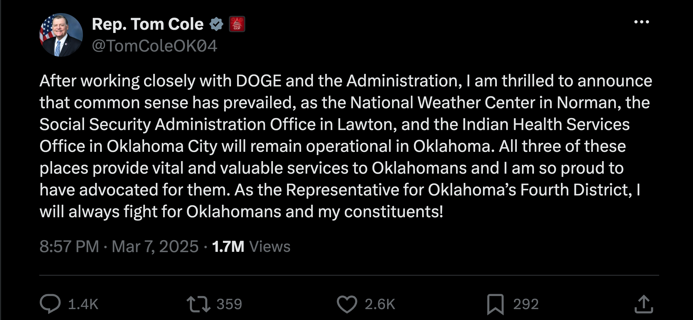

| Hypothesis | Balance of evidence | What changes | Main lesson |
|---|---|---|---|
| Demand | Mostly supported | Amount and mix | Larger constituencies → more interbranch representation. More empowered constituents → more of specific types. Needy constituents are served by organizations (local governments and nonprofits), not individual constituent service. |
| Capacity | Strong support | Mostly amount | Experience in Congress and larger staffs increase every type of interbranch representation. Committees increase interbranch policy work, especially (but not only) for chairs and ranking members. |
| Strategic incentives | Partly supported | Mostly mix | Strategic incentives change what kinds of work offices do and on whose behalf more than how much they do. |
| Partisan/Ideological | Support for ally theory | Mix | Alignment mostly outweighs antagonism; allies of the president and of the agency do more. Moderate House Republicans do more corporate service. Right-wing faction does less of most kinds of interbranch work. |
| Electoral | Mixed support (House only) | Amount and mix | Members of House representing districts with competitive general elections do more service. After a close primary, House members do more casework. Corporate PAC money goes to legislators who do more of all kinds of interbranch work, not just corporate work. |
| Institutional | Mixed support (House only) | Mix | When their party wins a majority, members of the House shift from service toward policy work. |
8 Conclusion
ABSTRACT: This chapter summarizes what we have learned about interbranch representation with respect to the broader picture of how to conceptualize and measure effectiveness in Congress. While partisan and ideological coalitions affect who is represented, on balance, we argue that variation in interbranch representation is better understood in terms of aggregate “effectiveness” than legislative “styles.” Not only are all types of interbranch representation correlated, but they are also all correlated with legislative effectiveness and fundraising. The main determinants of interbranch work are capacity constraints, mainly experience in office and access to staff. We conclude with practical policy implications for how interbranch representation can be improved, discussing how interbranch representation seems to be changing during the second Trump administration, and directions for future research.
Imagine that you are an individual facing one of the challenges involving the federal government that we have discussed throughout this book. Perhaps you or your loved one is dealing with a complex immigration procedure through USCIS or facing a serious illness for which the FDA is considering an experimental treatment. Maybe you are a worker seeking compensation or medical care for an injury through the Department of Labor, or a veteran or senior citizen who needs specialized treatments from the VA or Medicare. Your members of Congress may be able to help you navigate this difficulty with the agency. As a powerful person in government, they are more likely to get a response from bureaucrats to be responsive. Political scientists might tell you that legislators want to do this work to help secure their reelection. All members of Congress, they say, should simply respond to demand from constituents like you and work with federal agencies accordingly. It should make no difference whether you are represented by Rep. Barbara Comstock in Virginia or Senator Ted Cruz in Texas — all legislators should use their incumbent position to serve their constituents.
At the same time, the dominant frame through which we tend to think about how legislators represent constituents is via their legislative work, especially their voting record. Helping constituents deal with the executive branch is seen more as electioneering behavior than representation. With some exceptions (e.g., Minta 2011), congressional oversight is also either framed as electoral grandstanding or as the pursuit of power and policy in ways that rarely reached back to a constituency. Other activities, like congressional engagement in agency policymaking and implementation, are largely overlooked [exceptions here including Carpenter (2001); LowandePotter2021]. Moreover, despite clear connections in practice, literatures on constituency service, congressional oversight, and agency policymaking have had little contact.
In this book, we have taken up the questions of how and why legislators engage in what we call interbranch representation. We have found that the assumptions articulated above are not necessarily true. Legislators do vastly different amounts of interbranch work. As a result, the constituents that these legislators represent are experiencing interbranch representation differently. While this behind-the-scenes activity is often difficult for constituents to notice, it is undoubtedly consequential. The work that congressional offices do with federal agencies—urging them to take some action, change decisions, or speed up decisions, on behalf of individual constituents or as part of their policy work—is a large proportion of the work that they do overall.
With a few recent exceptions (e.g., Lowande 2018; Lowande and Potter 2019; Lowande et al. 2019; Mills and Kalaf-Hughes 2015; Ritchie 2018, 2023), political science has largely ignored this behind-the-scenes work that congressional offices do with federal agencies, especially when compared with the vast literature on legislative activity and roll-call votes. As the “hidden half of Congress,” interbranch work has been neglected and under-appreciated by scholars and the public. This omission is especially consequential when so much of policymaking action happens in the bureaucracy, and the daily lives of Americans are shaped by decisions made in federal agencies.
Our findings make three broad points about the concept of interbranch representation. First, looking systematically at interbranch representation across nearly all federal agencies over decades reveals the extent to which congressional offices are working to represent constituents. Policy-related interbranch activities like oversight occur continuously. Second, and relatedly, this interbranch work is much more collaborative and much less adversarial than the most research on Congress and the bureaucracy assumes, even when looking only at policy work. Third, the capacity of the congressional office, especially in the form of experience and staff, matters, as legislators with greater capacity do more interbranch representation. Although legislators experience differential demand for interbranch representation from their constituencies, they cannot rise to meet that demand without organization and resources. And importantly, higher-capacity legislators are doing more of all types of interbranch representation.
A focus on interbranch representation adds important nuance to modern narratives about a broken Congress. Although Congress may be broken in many ways, one underappreciated way in which Congress still works is through interbranch representation (at least for some districts). The First Amendment to the U.S. Constitution guarantees the right “to petition the Government for a redress of grievances.” In practice, citizens’ most direct experience with the federal government is with federal agencies. When citizens have grievances or simply need help navigating the federal bureaucracy, they petition their elected representatives for help. Legislators, in turn, petition the government for redress, facilitating responsiveness from agencies.
Perhaps if people better understood what congressional offices did and what they need in order to do it, politicians would be less scared of voting for more resources (e.g., staff) for Congress. This may require a shift in thinking about Congress as a group of politicians to thinking about Congress as an institution that serves a variety of functions, most of which are carried out by staff, not the politicians. Ironically, given how neither “bureaucracy” nor Congress are particularly popular, thinking of Congress more as a bureaucracy might make people like it better.
Our study of interbranch representation reveals many previously unknown dynamics between the legislative and executive branches. But our empirical analysis is not a complete account of interbranch representation, and there are many more forms of constituent demand, congressional capacity, and strategic incentives to study. By examining a form of congressional activity that was, until recently, largely invisible, our research raises new questions about what drives interbranch representation and what it means for the functioning of Congress. Our framework points to ways to pursue those questions.= After discussing our results in greater depth, we conclude by considering how interbranch representation informs our understanding of Congress’s effectiveness, including how this work can be improved and what the changes in the federal government during the second Trump administration are likely to mean for interbranch representation.
8.1 What We Found
We found tremendous variation across legislators in how much interbranch work they do. Some legislators are engaging in substantial and sustained work with federal agencies behind the scenes, while others are doing almost nothing—indeed, some barely appear in our dataset. The question at the heart of this book is why?
We find at least partial support for hypotheses from all three parts of our theoretical framework: constituent demand, office capacity, and strategic incentives Table 8.1. Our three sources of constituent demand (number of constituents, empowered constituents, and greater need constituents) shape the requests for help legislators receive, and in turn influence the provision of interbranch representation. Legislators who represent more constituents do more of all forms of interbranch representation; legislators who represent more empowered constituents do more of specific types of interbranch representation; and constituent need appears to reach Congress through requests from local governments and nonprofits, rather than through individual constituent service (disempowerment outweighs need for individuals). These findings are broadly consistent with and support Ritchie (2018) and Ritchie (2023)‘s work showing that constituent demand can shape interbranch representation. There are, however, important differences worth highlighting. First, we consider very different forms of constituent demand. In her work, Ritchie considered how specific aspects of constituent demand, such as the percentage of blue-collar population, democratic vote share, and the average number of mines in a district, affect legislators’ policy contacts with specific agencies (Ritchie (2018): Department of Labor and Ritchie (2023): Department of Labor, Homeland Security, and Department of Energy). Powell et al. (2023) look at similar measures of demand. We zoom out theoretically to three broad sources of demand (number, empowerment, and need). Our new data also allow a new empirical analysis. For example, extending Ritchie’s work showing that demand matters for policy contacts with certain agencies, we show that demand matters for shaping all types of interbranch representation (not just policy contacts) across the entire federal bureaucracy.
Capacity plays a major role in shaping whether and how legislative offices respond to constituent demand and entrepreneurially initiate their own work with federal agencies. Indeed, the magnitude of our effects for capacity suggests that it plays the most important role among our three factors. Specifically, we see legislators’ experience in Congress and larger personal office staff influencing how much interbranch representation (of all types) the office can provide, while committee factors (leadership and sitting on an agency’s reporting committee) shape capacity to engage in policy work. These results are broadly consistent with and supportive of Lowande (2018), Ritchie (2018), Ritchie (2023), and Lauterbach and Ritchie (2025)’s findings about the impact of capacity. Still, there are important distinctions and extensions worth highlighting.1 First, contrary to Lowande (2018), we show that the committee positions in terms of committee leadership and reporting committee jurisdiction only apply to policy work, and do not spill over into increasing constituent service as well. Second, we extend their capacity findings to show that they hold more broadly across a larger set of agencies over a longer time period.
We find that strategic incentives shaped by the political environment shape what kinds of work legislators engage in, and on whose behalf. In terms of partisan/ideological incentives, we see evidence of legislators engaging in interbranch representation strategically—less as a weapon of the opposition than as a resource of the aligned: legislators engage agencies not primarily to oversee or constrain ideological adversaries but to collaborate with ideological and/or partisan allies. Here our findings depart from previous literature on oversight, which has primarily posited a more adversarial dynamic (but see Lewis and Selin 2012). Lowande (2018) also investigated this question of antagonism or alignment and found null results for ideological distance. We suspect those null results may be due to a difference in the sample being studied—the Lowande (2018) study included only 2007-2010, and a much smaller number of cases and agencies. By contrast, Ritchie (2023) theorized and found evidence supporting an obstruction hypothesis that legislators engage in “backdoor lawmaking” (policy contacts with federal agencies) when their party is excluded from formal institutions of authority (Congress and White House). By contrast, we find allies of the president (copartisans) engaging in more interbranch representation. More generally, we find antagonism outweighing allyship, with one notable exception: corporate policy antagonism, which is consistent with Ritchie (2023)’s hypotheses. These differences with Ritchie (2023) may arise from the larger number of agencies, longer time periods, additional forms of interbranch work, and/or different model specifications.
A different set of ideological/partisan incentives we find support for involves Republicans engaging in more corporate work (though that finding is limited to corporate service). Antigovernment Republicans (Tea Party and Freedom Caucus members) engaging in less interbranch representation of many types (House: less nonprofit/local government service, general policy, corporate policy, and total interbranch; Senate: less individual constituency service, nonprofitnonprofit/local government service, corporate policy, and total interbranch representation). The Republican corporate work finding is consistent with, and extends Powell et al. (2023) findings regarding Republican corporate advocacy to the Federal Energy Regulatory Commission (FERC).2
Regarding electoral incentives, we found mixed support for expectations related to electioneering and the personal vote, with all effects limited to the House. Members of the House representing districts with competitive general elections provide more constituency service, but this does not appear to be causal (it is possible that too few districts changed in competitiveness). Competitive primary elections do appear to induce members of the House to provide more constituency service. Previously, the literature had been divided on this point, with Fiorina (1977) and Cain et al. (1987) supporting an electoral incentive, and Ritchie (2018) finding no effect of electoral vulnerability on policy contacts. Our results may help to reconcile these conflicting findings in the literature, as we see electoral vulnerability impacting constituency service — consistent with the personal vote literature of Fiorina (1977) and Cain et al. (1987), but not policy work, which is consistent with Ritchie (2018)’s null finding.
Regarding campaign fundraising, we find general evidence that PAC money goes to legislators who engage in more interbranch representation. However, our within-legislator analysis shows that more money does not change behavior. Similarly, in a case study of PAC contributions and the Department of Energy, we find that energy PAC money goes to those who do more work with the Department of Energy. However, we find an interesting pattern in our within-legislator analysis: while more money from energy PACs does not change corporate service or corporate policy work, it does appear to increase general policy work and total interbranch representation—perhaps suggesting limitations in our ability to distinguish these types of work. These findings documenting a relationship between corporate PAC contributions and work with an agency extend Powell et al. (2023)’s findings about energy PAC contributions and work with the Federal Energy Regulatory Commission (FERC). However, the broad association between fundraising and all types of interbranch work suggests that the story is about more than corporate money buying legislator advocacy, making the relationship between fundraising and interbranch representation ripe for future research.
Institutionally, we see that majority party House members engage in more policy work, while minority party members engage in more constituency service. If this is driven by incentives for members of the majority to engage in policy work, as we suspect, this dynamic may be reinforced by Lowande (2019)’s work showing that agencies respond more quickly to majority party members. Our finding that majority party House members engage in more policy work differs from previous studies of interbranch policy work. Ritchie (2023) found that minority members do more policy work in the House; in the Senate, she found majority members do more only for the Department of Labor, while Lauterbach and Ritchie (2025) found no difference between majority and minority members in policy requests to federal agencies (what they call “informal policy contacts”). There are several possible reasons to explain this difference: our larger dataset encompasses more agencies and a longer time period that includes more changes in party control. Interestingly, both Ritchie (2023) and Lauterbach and Ritchie (2025) found cross-chamber differences in the impact of majority status, just as we do here.
8.2 Conceptualizing and Measuring Effectiveness in Congress
A major argument of this book is that despite significant variation in interbranch representation across members of Congress, the regular provision of interbranch representation is one way in which Congress, as an institution, is relatively functional. As discussed in Chapter 1, Congress appears to be declining on a number of other (primarily legislative) metrics. However, this discourse about the broken nature of Congress comes with a caveat, noted by David Mayhew: the oft-used metric of “bills passed” is incomplete. More legislation, Mayhew argues, is not the same as landmark legislation. And legislating, though an important function of Congress, is only one of its tasks.
Separate from the question of what makes the institution of Congress effective is what makes an individual member of Congress effective. Scholars have done extensive work to answer this question by measuring the legislative effectiveness of individual legislators (Volden and Wiseman 2014). Since the introduction of Volden and Wiseman’s Legislative Effectiveness Scores, many other scholars have sought to understand how and why this legislative effectiveness matters, including for representation (Hunt and Miler 2025) and elections (Treul et al. 2022).
What, then, would we consider a truly “effective” Congress to be? Adding interbranch representation to our picture of what Congress does makes it clear that a more holistic understanding of Congress’s activities is necessary to answer this question. Studying interbranch representation also raises the question of how this work compares with other work that individual legislators do, particularly legislating and fundraising. To explore this relationship, we present correlations between interbranch representation and two measures of individual legislators’ productivity on other matters: Legislative Effectiveness Scores (Volden and Wiseman 2014) and corporate PAC fundraising (Bonica 2024).
8.3 Effective Representatives or Styles of Representation?
Is there an effective legislator type—who excels at all forms of representation—or do legislators vary across styles of interbranch representation? The strong correlations between all types of interbranch representation suggest that variation in interbranch work is probably better thought of as a single dimension of effectiveness than differing styles. However, the weak positive relationship between legislative effectiveness, fundraising, and interbranch representation suggests that there may not be a single dimension of effectiveness overall, and that it is worth investigating how legislator styles may impact interbranch representation.
Scholars have classified representation into “types” based on relative attention to various legislative, constituency, partisan, and communications activities (e.g. Fenno 1978; Payne 1980; Bernhard and Sulkin 2018; Grimmer 2013; Crosson and Kaslovsky 2025). From Home Style to “work horses and show horses”, many political scientists present variation in representation not in an overall measure of more or less representation but by characterizing different ways of representing (or at least, different ways of practicing politics).
Conceptually, the legislative styles developed by Bernhard and Sulkin (2018) seem to map well onto the types of interbranch representation. We might expect “district advocates” to be associated with more constituency services and less policy work, and “policy specialists” to be the reverse. However, Table 8.2 shows no such relationship. While the relationships between policy specialists and corporate constituent service (model 2) and policy work on behalf of industry (model 5) are in the expected directions, relative to the reference style of “Ambitious Entrepreneur,” this is true for all of the other styles as well.
| (1) | (2) | (3) | (4) | (5) | (6) | |
|---|---|---|---|---|---|---|
| † p < 0.1, * p < 0.05, ** p < 0.01 | ||||||
| This model predicts different types of interbranch representation using Bernhard and Sulkin's legislative styles. | ||||||
| Dependent variable | Const. | Corp | NGO/Govt | Policy | Corp Pol | Total |
| District Advocate | 0.011 | -0.384† | -0.150 | -0.027 | 0.337* | 0.052 |
| (0.203) | (0.220) | (0.143) | (0.312) | (0.167) | (0.145) | |
| Party Builder | -0.026 | -0.465* | -0.216 | 0.183 | 0.789** | 0.215 |
| (0.201) | (0.214) | (0.162) | (0.326) | (0.217) | (0.144) | |
| Party Soldier | 0.083 | -0.411† | -0.106 | 0.026 | 0.516** | 0.107 |
| (0.192) | (0.210) | (0.150) | (0.327) | (0.180) | (0.138) | |
| Policy Specialist | -0.122 | -0.464* | -0.227 | -0.125 | 0.527** | 0.002 |
| (0.179) | (0.205) | (0.144) | (0.323) | (0.182) | (0.135) | |
| Observations | 36,500 | 28,949 | 25,606 | 12,156 | 33,567 | 43,623 |
| Year x agency fixed effects | X | X | X | X | X | X |
For interbranch representation, trade-offs between serving the district and focusing on policy are not the main story. The invisible nature of interbranch representation likely plays a role in these patterns. For instance, “appropriator” and “position-taker” types.(Grimmer 2013) capture senators’ orientations toward communication and how these tendencies vary depending on their “marginal” or “aligned” electoral relationship with their state. Legislators of either style could realistically perform high levels of interbranch representation.
If we want to characterize styles of interbranch representation, it is an overarching style. A workhorses and show horses distinction is a better fit for the empirical patterns we observe. Some offices are doing much more work than others. Generally speaking, the same factors drive all of the different forms of interbranch representation we study.4.
8.4 Policy Implications of Interbranch Representation
“The demands on Congress are accelerating. Its capacity to legislate, oversee, learn, and adapt is not.” - https://congressh3.io/
The variation in interbranch representation that we have documented and explained in this book raises questions about how effectively congressional offices are handling this workload and what, if anything, can be done to improve how interbranch representation works. Our findings about the impact of congressional capacity on the provision of constituency service provide strong evidence that capacity limitations are serving as a binding constraint for some legislative offices Chapter 6. These, and other findings, have implications for potential policy remedies for how to improve the provision of interbranch representation.
Better Infrastructure and Processes to Facilitate the Casework to Policywork Feedback Loop
As constituency service has begun to gain more attention as an essential function of congressional offices, other groups more closely connected to the institution have made efforts to study and improve both casework and congressional communication with the bureaucracy. Organizations like Civic, which has proposed a consistent tagging system for casework to identify common problems that constituents experience during policy implementation, and PopVox, which provides resources for caseworkers and opportunities for congressional office staff to learn from one another, are doing vital work to improve congressional offices’ capacity for constituency service.
Improve Constituent Knowledge About Casework Services so that More Constituents are Empowered Constituents
Equally important are efforts to ensure that constituents are aware that they can contact their member of Congress for help. Surprisingly, to our knowledge, no survey questions have measured constituent knowledge about the existence of constituency service resources. While some recent research has picked up this thread (e.g. Blackwood 2026), much more needs to be done to understand legislators’ solicitation of casework and how (if at all) it affects interbranch representation.
Increase staff size and knowledge
Perhaps the most straightforward policy implication is that if staff resources are serving as a limiting factor, Congress could give members resources to hire more staff. But other capacity expansion efforts might be to help provide staff with more resources, training, and management. While our narrow and limited measures of staff experience showed no impact of staff experience on the amount of interbranch representation, we think better staff experience measures, and/or more detailed outcome measures about the impact of the contact might tell a different story. Interbranch representation depends on the skill and initiative of congressional staffers. Rather than mechanically responding to bureaucratic failures, members of Congress and their staff are contacting agencies in the bureaucracy with a wide range of concerns involving constituency service and policy. As part of effectively serving constituents and pursuing the legislator’s policy goals, congressional staff must possess knowledge about the workings of the bureaucracy and how it connects to constituency service and policy.
Implications for Term Limits
The consistent and positive relationship between legislators’ experience and providing more interbranch representation is further evidence that term limits would undermine Congress as an institution. Legislators–or, at minimum, their staff–need to spend time in the institution in order to develop useful expertise. This fact has long been known and accepted by political scientists (e.g. Carey et al. 2000), and this evidence that interbranch representation also benefits from institutional memory adds to this body of evidence.
8.5 Interbranch Representation Under a Changing Executive
Changes in the second Trump Administration simultaneously increase demand and opportunities for interbranch work to fill new gaps in the functioning of government while also likely making that work less effective, especially for legislators on the administration’s list of enemies. In short, opportunities to represent constituents are increasing, but the ability to do so successfully may be decreasing. The dismantling of certain agencies and offices and the dramatic shift from a merit-based civil service to more centralized control of agencies by White House under the Trump administration and the Roberts Court may drive increased interbranch representation in some cases and inhibit it in other contexts. Decreasing capacity, a shift to relying on contractors, and increased paperwork at many agencies, along with a general shift from standard procedures to ad hoc negotiations, potentially increase the value of the ombudsman role that congressional offices play. On the other hand, decreasing capacity also makes agencies less able to respond to legislator requests, correct administrative errors, reform in response to oversight investigations, or adapt to changing circumstances in response to legislator pressure. Increasingly centralized, partisan, and ad hoc decision-making may also foreclose some types of interbranch representation or some legislators from doing so (e.g., those not perceived as loyal to the president or with nothing to offer in exchange for help for their constituents).
Changes under the Trump administration could also affect the study of interbranch representation. First, as nearly all agencies lost experienced staff to firings and encouraged resignations, we may expect additional delays in responses to FOIA requests beyond what we have experienced (Shaw 2026), thus limiting our ability to obtain useful data in a timely manner. Second, agencies operating with fewer employees may simplify, alter, or even eliminate their regular Recordkeeping practices if they have fewer people available to keep and maintain records of congressional correspondence. As a way of explaining gaps in the records we received, FOIA officers told us that Recordkeeping was de-prioritized in the first Trump administration. The second Trump administration may be similar in this respect. Indeed, the administration claimed that DOGE was not subject to FOIA, and the Roberts Court stayed a lower court ruling that it was, saying “separation of powers concerns counsel judicial deference and restraint in the context of discovery regarding internal Executive Branch communications.” (U.S. Doge Service, et al. v. Citizens for Responsibility and Ethics in Washington 2025)
Why interbranch representation may increase: Decreasing agency capacity and procedures, increasing paperwork and contractors
Congressional offices fill gaps created by mass firings, office closures, and structural reforms that reduced internal oversight. The most obvious gap is in the ability of agencies to deliver benefits and correct errors when they lose staff capacity and offices in a district. For example, with historic cuts of 8,000 Social Security Administration (SSA) employees and the closing of offices in many districts, SSA’s backlog of cases has increased to record levels, and employees report that efforts to reduce call wait times have led to more errors (Rein et al. 2025; Romig 2026), increasing the number of people who could use help from a congressional office. Firings and office closures themselves create opportunities for interbranch representation. In the first months of the second Trump administration, there were daily reports of members of Congress engaging in interbranch representation to reverse proposed cuts. As Politico put it, “GOP lawmakers unleashed a frantic flurry of calls and texts after federal agencies undertook the latest firings” (Hill 2025). Axios reported that “GOP lawmakers are privately back-channeling with the Trump administration to try to shield their constituents from the fallout (Doherty and Solender 2025). For example, upon learning that offices in his district for the Social Security Administration (SSA), the National Weather Service (NWS), and Indian Health Service (IHS) were being targeted, Chair of the House Appropriations Committee, Representative Tom Cole and his staff started contacting their contacts at the White House and SSA, NWS, and IHS. The White House reversed course and removed the three offices from the lease cancellation list. Mr. Cole then claimed credit on social media (Figure 8.5) for the success of his office in representing his constituents and by protecting facilities that provide them with vital and valuable services (Miller 2025).

Similarly, after reporting that the Trump Administration planned to fire thousands of employees at the National Oceanic and Atmospheric Administration, Senator Lisa Murkowski texted Commerce Secretary Howard Lutnick, concerned about the agency’s ability to conduct annual trawling surveys used to allocate fishing rights to Alaska’s fishermen. “I’m letting them know what the problem is and giving them the opportunity to solve it,” Murkowski told the New York Times (Miller 2025). When the Department of Defense planned to fire 1,600 workers at the Tinker Air Force Base and McAlester Army Ammunition Plant, Senator James Lankford, Republican of Oklahoma, called Defense Secretary Pete Hegseth. The day after Senator Susan Collins met one-on-one with Secretary Hegseth, he issued a carveout exempting Maine’s naval shipyard workers from the Defense Department’s layoffs and hiring freeze. Rep. Mike Simpson said his staff were working to mitigate cuts to National Park Service sites in his district. Senator Jerry Moran contacted the State Department and the White House about how the dismantling of USAID was affecting his constituents who sell crops to a government program that fights hunger abroad (Leonard and Fuchs 2025). Shortly after, the State Department approved the shipping of $560 million of food aid sitting in ports. The Bonneville Power Administration hired back 30 fired workers after Rep. Cliff Bentz contacted the White House on their behalf. Rep. Zach Nunn contacted the USDA about firings in his district, telling Axios he “talked to the administration on it, they recognized it, they heard it, and we got those positions reinstated” (Doherty and Solender 2025).
The major casework-driving events of the second Trump administration Table 8.3 identified by Meeker (2026) highlight agency disruption and restructuring as major drivers of congressional office casework. Additionally, any administration that engages in wars, fails to prevent public health crises or natural disasters, or increases the number of people dealing with immigration, unemployment, or public benefit paperwork will increase the demand for assistance from congressional offices.
| Year(s) | Event | Casework Impact |
|---|---|---|
| 2025 | Government shutdown | Agency-disruption casework; exacerbated by many legislative offices placing staff on furlough |
| 2025 | DOGE restructuring and program changes | Sustained federal-employee and program-disruption casework |
| 2026 | Iran war | Repatriation casework on top of ongoing immigration casework |
| Recurring | Western drought and wildfire cycles | Seasonal and recurring disaster casework |
| Recurring | Local disasters: tornadoes, flooding, plant closures, industry collapses | Varied and complex local casework, often including disaster programs as well as wayfinding and connections to local relief, liaising with state counterparts on unemployment and emergency SNAP/WIC benefits, replacing destroyed or damaged documents, etc. |
Structural reforms may also increase the demand for oversight. For example, as many inspectors general are fired and their offices are added or dismantled, agencies may investigate and correct fewer of their own mistakes, creating more opportunities for congressional offices to attempt to fill the gap. Similarly, the Trump administration’s dismantling of appeals processes for public benefits and civil servants, as well as offices that help people navigate the degraded federal bureaucracy, may create demands for an ombudsman.
After the Roberts Court ruled that Congress acted unconstitutionally in requiring for-cause removal of agency heads (and generally erasing most forms of agency independence as unconstitutional), the Merit Systems Protection Board began several initiatives to dramatically limit the scope of its work on behalf of civil servants. It removed the word “independent” from its website and issued joint rules with the Office of Personnel Management, removing procedures and factors that agencies previously had to consider when firing workers, making the process more ad hoc. Similarly, the removal of civil service protections from many federal employees (Hsu 2026) creates many opportunities for case-by-case workarounds in federal worker firing. As discussed in Section 3.5, members of Congress intervene and inquire about civil service and political appointee hiring and firing decisions. With fewer processes and protections, congressional offices may be making more inquiries.
Like cuts to the federal workforce, impounding or changing disbursement criteria for federal grants may provide opportunities for interbranch representation. For example, Senator Katie Britt of Alabama lobbied the Trump Administration not to cut National Institutes of Health medical research grants to the University of Alabama (Miller and Edmondson 2025; Turner 2025) and Lisa Murkowski of Alaska asked NIH not to target Alaska Natives in cuts to programs linked to racial minorities.
Increasing and increasingly unclear paperwork and legal processes also create opportunities for interbranch representation. For example, the SSA now requires people to appear in person at a field office for some changes that were once able to be made over the phone, while at the same time closing many field offices (Rein et al. 2025). For example, the AP reported that Rep. Carlos Gimenez was helping his constituents and their families in Miami after the Trump Administration removed Temporary Protected Status from Venezuelans, suddenly making their immigration status unclear, making them unable to work, and putting them at risk of deportation if they were not able to navigate the increasingly overwhelmed immigration system. Asked if he felt he had the power to make a difference, he replied: “I’m not powerless. I’m a member of Congress.” (Mascaro and Freking 2025).
Why interbranch representation may decrease: Decreasing agency responsiveness, increasing partisanship
Our findings have also made clear the importance of employees in the federal bureaucracy for legislators providing effective representation. Although we did not examine agencies’ responses to legislators’ queries, legislators would undoubtedly be most effective at interbranch representation when bureaucrats are responsive to them. The Trump administration’s cuts to the federal workforce may lead agencies to be less responsive to requests from members of Congress, thus impeding the overall functioning of interbranch representation, particularly its ability to “close the loop” in bureaucratic processes. Beyond the raw capacity to respond to legislator requests, dismantling internal checks and transparency mechanisms like performance evaluations (Friedman 2026), whistleblower protections (Doubleday 2025), inspectors general, and FOIA also gives members of Congress much less information to use in conducting oversight.
The centralizing of control over federal agencies, including in their communications with members of Congress, may inhibit the flow of information and responsiveness to perceived enemies. As we noted in Section 4.1.1, Legislative Affairs offices are the official point of contact for members of Congress, but we found a large volume of interbranch representation directly targets sub-agencies, not going through legislative affairs or the Secretary’s office. If the Trump administration’s controversial efforts to centralize correspondence with members of Congress in legislative affairs offices are successful, many legislators worry that their correspondence with agencies will be inhibited (Timotija 2025). As Politico reported,
“Republicans consider federal agency officials powerless to [stop personnel and program cuts]. They’re instead focusing their efforts on the White House as their offices are inundated with calls from frantic constituents” (Hill 2025).
Likewise, if efforts to centralize contracting and procurement (Alms 2025) are successful, the ability for members of Congress to intervene may be limited. We found strong relationships between agencies and legislators who sit on their reporting committees. To the extent that procurement is centralized in one of the few agencies that does not report to any congressional committee (the General Services Administration), legislators will no longer have that relationship with the decisionmakers on government contracts.
Importantly, centralizing decision-making and correspondence with members of Congress in the offices of political appointees and the White House makes the potential effectiveness of interbranch representation more contingent on a member’s relationship with the president. This makes contacts with the White House and political appointees more valuable and relationships with career civil servants less valuable to interbranch representation. It also opens the door to partisan loyalty tests, potentially leading to larger presidential pork (Berry et al. 2010) effects than we find here. For example, it was widely reported that the exemptions to cuts, like those granted to Representative Cole’s district, were only available to republicans in good standing with the president. The New York Times reported that some Republicans were invited to meet privately with those in charge of the cuts and given a cell phone number they could call to make requests, while letters from Democrats went unanswered (Miller 2025). Like Republicans Murkowski and Cole, Democratic Senator Chris Van Hollen contacted the office of Commerce Secretary Lutnick about staffing cuts and office closures, including several National Weather Service prediction and modeling centers in his district. Unlike Murkowski and Cole, weeks passed with no word from the agency. “These guys have been AWOL when it comes to responding,” Van Hollen told the New York Times (Miller 2025). The Times also interviewed Senator Ron Wyden of Oregon, the top Democrat on the Finance Committee, who said the administration was on “a stonewalling spree” — “I’m used to having challenges, but here, they don’t even pretend to be sincere about it” (Miller 2025).
“Asked about the partisan disconnect, a White House spokesman did not deny that the administration was largely ignoring Democrats’ appeals while catering to those of Republicans” - The New York Times (Miller 2025)
In the first Trump administration, the White House broke with post-Watergate norms about responding to congressional requests, but the agencies were generally still responsive (Kumar 2019).
Finally, the Trump Administration’s general reduction of reporting and transparency may limit the ability of congressional offices to know what is going on. For example, SSA stopped publicly releasing regular monthly updates of many customer-focused service metrics (Rein et al. 2025). We found that the most common way that members of Congress engage agencies on policy issues was by commenting on proposed agency rules. To the extent that the Trump Administration is successful in curtailing administrative processes like public comment periods and environmental impact reviews, opportunities for interbranch representation will be curtailed, especially for members without direct lines of communication with the president’s inner circle. Such structural reforms that limit opportunities for oversight can be thought of as limiting the capacity of Congress, even if congressional staffing remains the same (Bolton and Thrower 2016).
Given that this book has examined congressional behavior, it is worth considering at greater length how members of Congress may respond to this new environment. Our findings on the role that presidential partisanship plays in interbranch representation are instructive here. Empirically, in our data we find that legislators have used interbranch representation less as a weapon of the opposition than as a resource of the aligned: legislators engage agencies not primarily to constrain ideological or partisan adversaries but to extract responsiveness from legislators who show loyalty to the president.
8.6 Directions for Future Research
A natural and important starting point for future research is to examine how changes to the executive branch under the Trump administration impact interbranch representation. But this is just one of many possible avenues of future research.
Future research could examine other forms of interbranch representation, such as members of Congress submitting amicus briefs for court cases. Future work could also build on existing work on oversight hearings as a form of representation (Minta 2011) and other ways that members of Congress engage in bureaucratic decision-making, such as participating in advisory committees.
One surprising thing we found in congressional correspondence logs was letters from judges that agencies tagged with a similar level of importance. Similarly, agencies assigned high-priority designations to correspondence with White House officials, as well as lobbyists, suggesting that agencies’ congressional offices are situated in a constellation of external political relationships that agencies need to manage. Notably, White House officials sometimes played a similar ombudsman role as congressional offices. For example, on May 5, 2018, the White House contacted the U.S. Army Corps of Engineers about a “Family Real Estate Issue,” specifically that the family “want[s] their Lake View Back.”
As a practical matter, the institutions of our vast federal government cannot magically coordinate and work together to solve problems. Interbranch correspondence is work that stitches the government together. The “three branches” of government metaphor may do harm to our understanding of a complex federal system (Bednar 2009) with stylized job descriptions. The threads of scholarship we unite in this book paint a richer picture of what representation is in practice with our institutions as they are. A bureaucracy of millions serving a population of hundreds of millions will always do so imperfectly, with opportunities for improvement inspired by people’s problems, and inevitable fights over policy continuing long after the ink is dry on most pieces of legislation. Businesses, universities, and local governments will always be searching for someone with clout to get their bid or application a second look.
Our findings emphasizing the importance of experience and the number of office and committee staff suggest that researchers who focus on Congress should ask questions typically asked of bureaucracies, such as how staff is selected and deployed and the consequences of these decisions (Brierley et al. 2023). For example, journalists have suggested that a member replacing their office staff with former White House officials gives it stronger ties to the president (Weiner 2023). If institutional structure and access to staff drive differences in representation, scholarship on bureaucratic organization of Congress, allocation of resources to different tasks (Ommundsen 2025), and capacity (Crosson et al. 2021) takes on new importance.
8.7 Conclusion: Interbranch Representation and Democracy
A focus on interbranch representation adds important nuance to modern narratives about a broken Congress. Although Congress may be broken in many ways, one underappreciated way in which Congress still works is through interbranch representation (at least for some districts). The First Amendment to the U.S. Constitution guarantees the right “to petition the Government for a redress of grievances.” In practice, citizens’ most direct experience with the federal government is with federal agencies. When citizens have grievances or simply need help navigating the federal bureaucracy, they petition their elected representatives for help. Legislators, in turn, petition the government for redress, facilitating responsiveness from agencies.
But American citizens, just like political scientists and journalists, haven’t been paying attention to the large amount of work Congress has been doing to advocate on their behalf. If people knew more about what was going on behind the scenes, they might be pleasantly surprised—especially given rock-bottom expectations of Congress today.
Much of our discussion up to this point may imply a normative interpretation of interbranch representation—that is, the idea that providing more interbranch representation is better. That tone is in contrast to Ritchie (2018) and Ritchie (2023), whose framing of “backdoor” lawmaking has a more negative connotation of circumventing the normal process. We don’t dispute the idea that some instances of interbranch representation may be bad, or that policymaking should be done in the legislative branch rather than in bureaucratic agencies. However, as a practical matter, today many policy decisions happen at the agency level rather than through the legislative process. This means that legislators contacting federal agencies may actually help to revive legislators’ role in the policymaking process, with feedback from the people’s elected representatives returning a small “d” democratic voice to the process.
It is beyond the scope of this project to characterize individual contacts as good or bad, and surely scholars of political science would disagree on any potential coding scheme. We could likely all agree that fixing systemic problems constituents encounter with federal agencies, thus reducing the need for interbranch representation, would be a very good thing. However, not all requests that appear in our data, particularly for constituency service, arise due to a broken bureaucracy or deliberate administrative burden.
Consider, for instance, individual constituency service related to immigration, with congressional offices making over 100,000 per year to U.S. Citizenship and Immigration Services (only one of several immigration agencies). There is no denying that this volume of service means that individual constituents struggle to navigate the bureaucracy of immigration. It is often bewildering, complex, and demoralizing. Legislators, for their part, recognize the ability of immigration matters to generate requests for constituent services and sometimes structure their offices and communications accordingly so that they can meet this demand. Congressional staff are likely well aware that, by helping with these problems, they are guiding people through some of the most stressful and significant moments of their lives. In these moments, it matters to have someone fighting for you. It is no accident that representative government serves this function.
The complexity of the immigration system in the United States makes the need for assistance inevitable. Hearteningly, interbranch representation suggests that legislative offices seem to recognize this fact. The tireless advocacy of congressional staff on behalf of constituents with little political power is a sign that congressional offices view interbranch representation through a logic of appropriateness, perhaps even a concept of appropriateness linked to equity and justice. At the same time, we have shown that ideological and partisan incentives shape what work legislative offices choose to take on, and different legislators make different choices about what issues and constituents to advocate for.
Collectively, we find that what makes the biggest differences in how much members of Congress do for their constituents is not driven by partisanship or electioneering, but by capacity — members of Congress with the knowledge and resources to get things done for their constituents, even when the decisionmakers sit in the executive branch. People complain that Congress isn’t doing more, but congressional offices are running on shoestring budgets compared to the executive branch. Most Members of Congress devote substantial portions of their budget allocation to hiring staffers to provide constituency service to their district and oversight work that often stems from constituents’ problems. Congressional staffers devote tremendous time and energy to helping constituents navigate the federal bureaucracy. Young staffers answer phones and emails, hoping to help constituents are often met with anger and vitriol by callers unhappy with the choices Congress, their legislator, or someone else entirely made. That they keep answering the phones and trying to help is a testament to their dedication to their jobs, and helps to illustrate that while Congress often deserves the moniker “the broken branch”, it is not entirely broken.
The literature has also considered how agencies respond to legislator requests. Lowande (2019) shows that agencies respond more quickly to requests from committee chairs, which could encourage legislators to contact agencies when in committee leadership positions.↩︎
Though we did not expect it, we found that Republicans engaged in less general policy work, which somewhat contradicts Ritchie (2018)’s finding that Republican Senators engage in more policy work with the Department of Labor, though she found that in only specification, and that the effect disappeared once she added cross-pressure interactions that we do not (and cannot) capture in our broader many agency analysis.↩︎
The Pearson’s product-moment correlation between annual Legislative Effectiveness Scores and total annual requests to federal agencies is 0.024 (p < .01).↩︎
The most significant deviations are related to partisanship, so we could potentially talk about Democrat, Moderate Republican and Right Wing Republican styles of representation↩︎